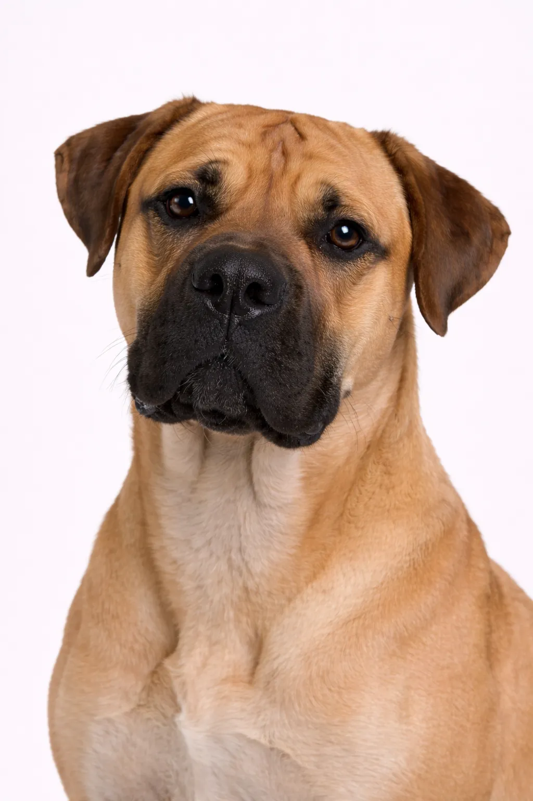

Boerboel
The Boerboel is a powerful South African mastiff bred to protect homesteads. They're confident, intelligent, and devoted to their families.
Breed Ratings
Temperament
Overview
The Boerboel is a powerful South African mastiff bred to protect homesteads from predators.
Temperament
The Boerboel is known for being confident, intelligent, calm. They're excellent with children and make wonderful family pets. Early socialization helps them develop into well-rounded companions.
Health
Generally healthy with a lifespan of 9-11 years. Common concerns include hip dysplasia and bloat. Regular veterinary checkups and preventive care are important. Maintaining a healthy weight helps prevent many health issues.
Exercise
Moderate exercise needs with daily walks and regular play sessions. They enjoy a mix of physical activity and relaxation time. Interactive games and training sessions provide mental stimulation. A consistent exercise routine keeps them healthy and happy.
⦿ Is This Breed Right for You?
✓ Best For
- Experienced large breed owners
- Rural properties
- Those wanting a guardian
- Families with older children
✗ Not Ideal For
- First-time owners
- Apartment dwellers
- Novice large breed handlers
- Areas with breed restrictions
Our Verdict: Powerful South African guardians with calm confidence. Boerboels are protective and loyal but need experienced handlers and space.